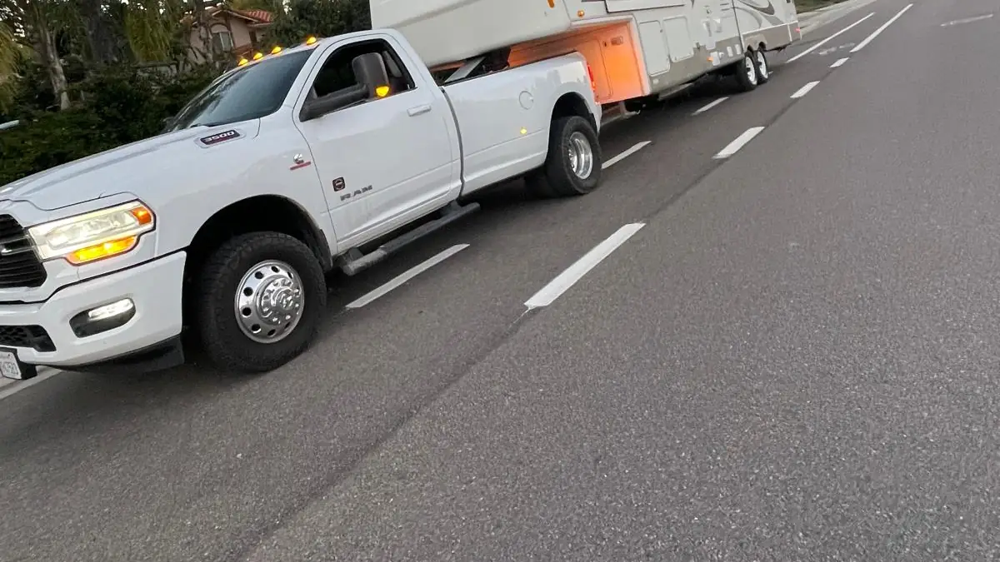
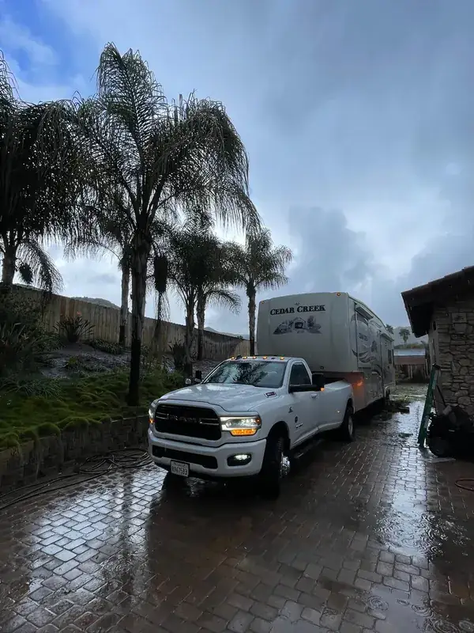

RV transport & towing in Chula Vista
South Bay RV moves for fifth wheels, travel trailers and toy haulers. Bayfront RV parks, Otay Mesa storage and long-distance transport.
- Loomis → San Diego
- Sacramento → San Diego
- Escondido → Yuma, AZ
- Arizona → San Diego
- Indio → Vista
- Palm Desert → Borrego Springs
- El Cajon → Jurupa Valley
- Escondido → Port of Long Beach
- San Diego → Los Angeles
- San Diego → Orange County
- San Diego → Las Vegas, NV
- San Diego → Hawaii, by ship
South Bay RV moves without the drive
Chula Vista has some of the best-located RV parks in the county, right on the bay, and a lot of RV storage out toward Otay Mesa. Getting a big fifth wheel between the two through South Bay traffic is exactly the kind of job Chato's takes off your plate.
Jose covers Chula Vista, National City, Bonita, Eastlake, Otay Ranch and San Ysidro, with I-5, I-805 and SR-125 all within a few minutes.
Chula Vista RV jobs
- Moves to and from Chula Vista RV Resort and Sun Outdoors San Diego Bay
- Campground trips to Sweetwater Summit Regional Park
- Drop-offs at KOA San Diego Metro and La Pacifica RV Park
- Storage lot runs around Otay Mesa and Eastlake
- Relocations for full-time RVers moving to or from the South Bay
Heading to a bayfront park? Many have assigned arrival windows. Send Jose your check-in time and he will plan the pickup around it.

Long-distance RV transport from Chula Vista
From the South Bay, Chato's transports RVs north on I-5 and I-805 to the rest of California, and east on I-8 to Arizona. Moving across the country with a full-time rig? Call to talk through the route.
Car transport in Chula Vista too
The same truck pulls a dedicated car hauler. Chato's moves daily drivers, EVs, exotics and collector cars from Chula Vista one vehicle at a time, door to door, with wheel straps on every tire.
Chula Vista ZIP codes we serve
RV moving, RV transport and car transport anywhere in these ZIP codes, including Eastlake, Otay Ranch, Rancho del Rey, Bonita, National City.
- 91910
- 91911
- 91913
- 91914
- 91915
- 91902
- 91950
Why Chula Vista RV owners call Jose
Real reviews from Chato's Google Business Profile and Yelp. Same story every time: honest price, constant updates, and a driver who treats your RV like his own.
I had a 43ft 5th wheel I needed transported last minute, so I jumped online, seen Chato's Auto Transport ad, seen the 5 star reviews and reached out. Not only did Jose answer quickly, but he was very polite & he was able to meet me at my rv within an hour. He hooked right up & transported it to the location. He is an exceptional driver who can get whatever you need moved, but he does it with care, efficiency & the experience of someone who has been doing this for a long time! I have since hired him to transport my 5th wheel multiple times & wouldn't want anyone else.
When it comes to transport 1) I worry 2) I research the heck out of who is a good option and 3) this is an industry with many dishonest people. If you have any of these concerns, Jose Barba/ Charo Transport is your best possible option. I needed a vintage trailer moved from Sacramento to San Diego quickly after I made a bad choice and had to fire a transporter who lied and changed stories. He was responsive, kind, constant updates, on time as much as traffic would permit and extremely professional.
Very professional, fast and even fixed my 5th wheels jack system just to help us out because ours wasn’t working. Extremely polite and helpful would definitely recommend!! I will be a returning customer
If I could give Jose 100 stars I would! Jose transport 40' fifthwheel for us from Loomis to San Diego! 8 hours drive! the next day he took it to the port to ship it to us (we live in Lahaina Hawaii). we never met Jose! all the logistics happen on the phone, he is a pro! send me pictures and videos of every step of the way! and as he promised he delivered the fiftheheel to the port! I felt like my own family member helping me out! MAHALO
If you need your travel trailer towed in Southern California, I recommend Jose Barba, Chato's Trailer Towing in San Diego/Escondido. Thank you, Jose, for getting my Airstream Trailer safely back to Yuma! Jose was professional, responsive and on time! Trailer delivered safe and sound!
I hired Jose and my experience was very professional with a fair and reasonable price. He was very punctual and communication was excellent throughout the entire trip.
This is a real honest review especially since I never do reviews! This the second time I used Chato's towing. The first time was a couple years ago he picked up my 42Ft 5th wheel in Indio and dropped in Vista which was very fairly priced! Jose and his wife are supper friendly and patient! Him and his wife seem very honest and give the vibe of family helping you!
EXCELLENT. I used Jose to move a motorhome from Arizona to San Diego. He was friendly, fair priced, showed up on time and had excellent equipment in top notch condition.
Jose at Chatos was amazing! He was responsive and accommodated our short time frame request to move our park model RV from Palm Desert to our space in Borrego. It was a tight fit into our new space and he worked with us until we got it right! Highly recommend!
All I can say is WOW!! Jose's experience and patience is exceptional. He was able to bring a 43' fifth wheel into a space that it should have never fit. But he did it. His patience and care exceeded my expectations. His concern for my property was above and beyond.
If I could give Jose Luis a thousand stars, I would without hesitation! Truly exceptional towing service! Excellent customer service, professionalism, friendliness, and an incredible willingness to help. You can tell when someone does their job with passion and dedication. 1000% recommended!
Chato's Auto Transport & Towing is the best RV transport service we have ever worked with. Jose is truly a superstar, he communicates with you great and works very hard and ALWAYS does an AMAZING JOB.
Used Jose to move our tiny home trailer for the 2 hour drive from the dealer to our spot. He was extremely responsive when setting up the delivery details. He was on time to pick up from the dealership and seeing him pull the trailer onto our ranch, he was extremely careful and a very skilled driver at towing our 45 foot trailer
Jose was amazing he was fast and he knew what he was doing I have a fifth wheel that I needed transported and it wasn't an easy job. He took his time and was extremely patient and professional. Y lo mejor es que También habla español muy recomendable
Fast service, great communication, smooth transaction, recommend +++.
Awesome service. Jose was very professional and helpful. He transferred our 5th wheel to Jurupa from El Cajon. I highly recommend Chato's Service. Extremely satisfied customer.
Jose transported our 5th wheel today and did an absolutely beautiful job! His 30 years of experience definitely shows! He was on time and drove my home with absolute care and professional. Definitely worth every penny to ensure the safety of my RV.
I had a driver lined up to tow a 5th wheel for me at 8am. then he texted me to cancel at 5:30am. after many unsuccessful calls to find someone else, i was very fortunate to get ahold of jose with chato's towing. jose is efficient, couteous and respectful of my property. jose is a real professional in every way.
RV towing in Chula Vista: common questions
Do you cover National City and Bonita?
Yes. National City, Bonita, Eastlake, Otay Ranch, Imperial Beach and San Ysidro are all covered.
Can you pick my RV up from storage in Otay Mesa?
Yes. Send the storage facility name and your space number, and make sure the gate code or access is arranged.
Can you move my RV between two Chula Vista parks?
Yes. Park-to-park moves in the South Bay are usually same-day jobs.
Other cities we serve
Chato's covers all of San Diego County and southwest Riverside County from its Escondido base.
Moving an RV in Chula Vista?
Text the pickup spot, the drop-off and the RV length. Jose will reply with a price.